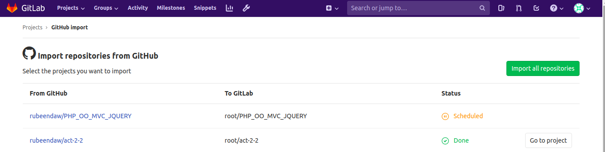

Actividad 1
GitLab es un proyecto de código libre que se puede instalar en tu propio servidor y que te permite tener repositorios privados. Este proyecto nació en Ucrania y poco a a poco se convirtió en uno los mas importantes sistemas de control de versiones.
Vamos a empezar instalando las dependencias necesarias:
sudo apt-get install ca-certificates curl openssh-server postfix
Vamos a instalar el repositorio necesario:
curl -LO https://packages.gitlab.com/install/repositories/gitlab/gitlab-ce/script.deb.sh | sudo bash
Finalmente, instalamos GitLab con la url externa desde donde accederemos:
sudo EXTERNAL_URL="https://localhost:4005" apt-get install gitlab-ee
Vamos a cambiar el puerto que habiamos puesto como 4005 a 4007.
Para eso editamos /etc/gitlab/gitlab.r y cambiamos external_url

Hacemos el comando: sudo gitlab-ctl reconfigure
Para que se actualicen los cambios y lo comprobamos:
Ahora vamos a inpedir que los usuarios puedan cambiar su identificador.
Entramos en el mismo archivo que ates y buscamos la linea:
gitlab_rails[‘gitlab_username_changing_enabled’] = true
Descomentamos esa linea y la pasamos a false:
Para modificar el tiempo de expiración de sesión entramos en: Settings → Account and limit

Ejemplos de procesos por llamada API:
- Gestión usuarios:
- Crear usuario: POST /users
- Modificar usuario: PUT /users/:id
- Borrar usuario: DELETE /users/:id
- Bloqueo de usuarios: POST /users/:id/block
- Desbloqueo de usuarios: POST /users/:id/unblock
- Hacer usuario administrador: PUT /users/:id y le añadimos admin=true
- Creación de proyecto: POST /projects
Vamos a proceder a modificar la página de creación de un proyecto nuevo:
Entramos en Admin area, appearance y New project pages
Procedemos a hacer el cambio y le damos a update appeareance settings:
Si queremos cambiar la descripción y el logo de la pantalla de logi, entramos en Admin area y appearance:
Comprobamos como se ha cambiado:
Para terminar la apariencia vamos a cambiar el favicon desde el mismo sitio que el anterior:
Vamos al apartado de crear proyecto pero vamos a importarlo de github, para eso vamos a pulsar en import project y seleccionamos github:
Tendremos que introducir nuestro token privado de github que no voy a mostrar por privacidad, luego veremos que podemos seleccionar nuestro proyecto a importar:

Podemos ver como tenemos ya nuestro repositorio importado:
Si queremos importar desde una llamada api se hace de la siguiente forma:
curl --request POST --header "PRIVATE-TOKEN: 9koXpg98eAheJpvBs5tK" --data "personal_access_token=abc123&repo_id=12345&target_namespace=root" https://gitlab.example.com/api/v4/import/github
Con los siguientes parámetros: personal_access_token, repo_id, new_name y target_namespace